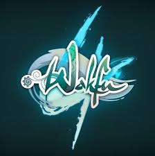
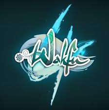

Ankama a su imposer son empreinte dans le paysage culturel français et international, bien au-delà du simple cadre du jeu vidéo. Fondée en 2001, l'entreprise est rapidement devenue un acteur majeur de l'industrie créative avec ses univers transmédias qui allient jeu vidéo, animation, bande dessinée et plus encore. Des œuvres emblématiques comme Dofus et Wakfu ont contribué à bâtir un écosystème unique, offrant une expérience immersive et cohérente aux fans.
Ankama joue un rôle central dans le développement et la promotion de la culture geek en France, notamment à travers sa participation active à des événements majeurs. La présence d'Ankama dans des festivals comme la Japan Expo ou le Festival international de la bande dessinée d'Angoulême a permis à l'entreprise de consolider sa place en tant que pilier de la culture pop française. Ces événements offrent non seulement l’occasion aux fans de rencontrer les créateurs et de découvrir les nouvelles œuvres, mais aussi de participer à une véritable célébration de la créativité et de l'innovation.
Jeu vidéo
L'impact d'Ankama sur l'univers du jeu vidéo est indissociable du succès massif de ses titres phares, Dofus et Wakfu, qui ont redéfini le genre du MMORPG en France et à l'international. Lancé en 2004, Dofus a rapidement conquis un large public avec son style visuel unique et son gameplay stratégique. En proposant un univers riche, peuplé de créatures fantastiques et de quêtes épiques, Ankama a su créer une expérience immersive qui a marqué des millions de joueurs à travers le monde. Wakfu, lancé quelques années plus tard, a renforcé cet univers en lui apportant de nouvelles mécaniques de jeu, tout en étendant la portée narrative.
Animation
Ankama a également laissé une empreinte durable dans le domaine de l’animation, notamment grâce au succès phénoménal de la série Wakfu. L’adaptation animée de l’univers du jeu vidéo a captivé un large public, aussi bien en France qu’à l’international. Lancée en 2008, la série Wakfu a été saluée pour la qualité de son animation et la richesse de ses personnages. Diffusée à l’origine sur France 3, elle a rapidement gagné en popularité et a été portée sur des plateformes mondiales comme Netflix, touchant ainsi une audience bien plus large.
Bande dessinée
Ankama a également laissé une empreinte durable dans le domaine de l’animation, notamment grâce au succès phénoménal de la série Wakfu. L’adaptation animée de l’univers du jeu vidéo a captivé un large public, aussi bien en France qu’à l’international. Lancée en 2008, la série Wakfu a été saluée pour la qualité de son animation et la richesse de ses personnages. Diffusée à l’origine sur France 3, elle a rapidement gagné en popularité et a été portée sur des plateformes mondiales comme Netflix, touchant ainsi une audience bien plus large.